Example 1 - Energy Level
Prediction the energy difference between the HOMO and LUMO of ethylene and formaldehyde.
Learning target: opt, read output
(1) 進入 Gaussview，分別將 ethylene 和 formaldehyde 建構出來，建成 ethylene.gjf 與 formaldehyde.gjf 檔。
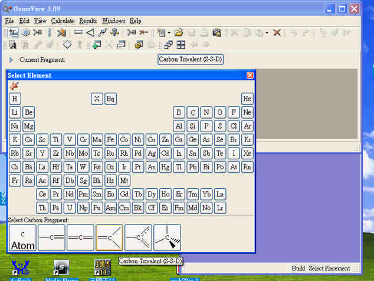
(2) 兩者的完整 gjf 檔分別如下，可對照下放圖示：
%chk=ethylene.chk
%mem=6MW
%nproc=1
# opt freq hf/3-21g
Title Card Required
0 1
C -2.49999996 -0.57377048 0.00000000
H -1.96683622 -1.50147540 0.00000000
H -3.56999996 -0.57377048 0.00000000
C -1.82472565 0.60120681 0.00000000
H -2.35788940 1.52891173 0.00000000
H -0.75472565 0.60120681 0.00000000
%chk=formaldehyde.chk
%mem=6MW
%nproc=1
# opt freq hf/3-21g
Title Card Required
0 1
C -0.81967212 -1.51639342 0.00000000
H -0.28650837 -2.44409834 0.00000000
H -1.88967212 -1.51639342 0.00000000
O -0.19263169 0.42534307 0.00000000
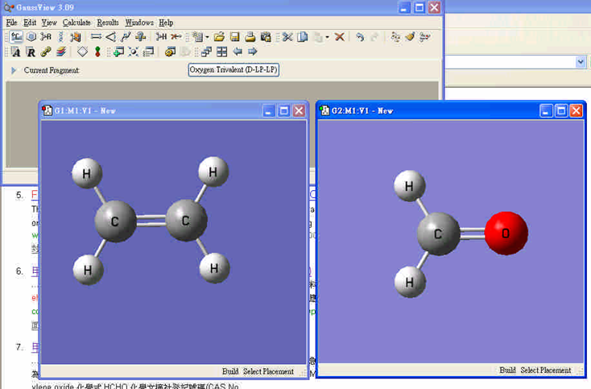
geometry optimization
# opt
對結構進行最佳化
frequency calculation
# freq
主要有三個目的 :
1. 看是否有負頻的存在
2. 可以顯現光譜
3. 可求熱力學參數
(3) 然後啟動 gaussian09，分別開啟檔案 ethylene.gjf 與 formaldehyde.gjf 檔，對其進行 opt 和 freq 計算。
(4) 計算完成後，此時有兩種 read output 的方法可以取得 HOMO 及 LUMO 的能階資訊。
Method 1 - View File 文字檔
啟動 Gaussview，分別打開 ethylene.log 和 formaldehyde.log 檔，在工具列 Results 選項中選擇 View File ，其中 Occupied 的最後一個軌域即為 HOMO，Virtual 的第一個軌域即為 LUMO，兩數值相減即為 Band Gap，單位為 hartree。
ethylene：
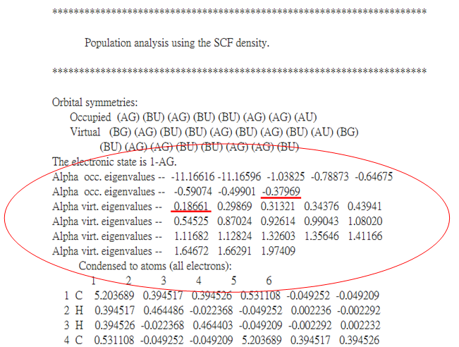
formaldehyde：
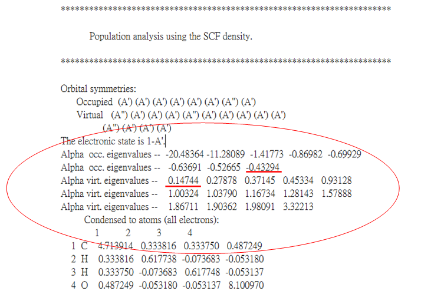
Method 2 - Gaussview 圖形介面輸出
啟動 Gaussview，分別打開 ethylene.log 和 formaldehyde.log 檔，在工具列 Edit 選項中選擇 MOs，即可從圖中得知，最低未填電子軌域即為 LUMO，最高佔據電子軌域即為 HUMO，相減即 Band Gap。
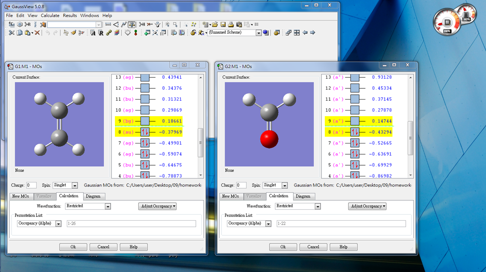
註：圖中淺綠色線為能階正負號的交界。
(5) 由以上計算可以得知：
Ethylene 之 Band Gap = 0.18661 – ( -0.37969 ) = 0.56630 hartree
Formaldehyde 之 Band Gap= 0.14744 – ( -0.43294 )= 0.58038 hartree
Example 2 - Geometry Optimization
Run a geometry optimization for NH3 with C3v symmetry.
Learning target: Z-matrix ＆ dummy atom
(1) 啟動 Gaussview，建立一個 NH3 的分子，存為 nh3.gjf。
(2) 打開 Results 中的 View File，輸入以下指令：
%chk=nh3.chk
%mem=6MW
%nproc=1
# opt freq hf/3-21g scfcyc=1000
Title Card Required
0 1
N
X 1 1.0
H 1 B 2 A
H 1 B 2 A 3 120.0
H 1 B 2 A 3 -120.0
B 1.07
A 109.0
(3) 輸入完指令後，儲存再重新開啟 nh3.gjf 檔，即可看到以 dummy atom X 為基準點所建立出來的 z-matrix 座標。
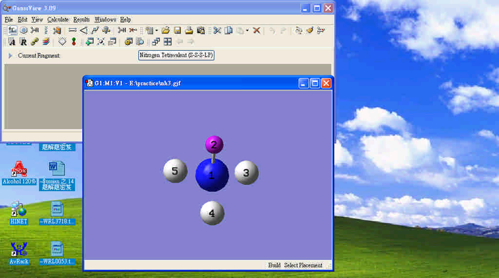
介紹Z-matrix
N
X 1 1.0
H 1 B 2 A
H 1 B 2 A 3 120.0
H 1 B 2 A 3 -120.0
B 1.07
A 109.0
(4) 利用 gaussian09 跑完 nh3.gjf 檔後，再利用 gaussview 打開 nh3.log 檔，在工具列 Results 選項中選擇 Summry，就可以得到 opt 後 C3V 對稱的 NH3 分子。
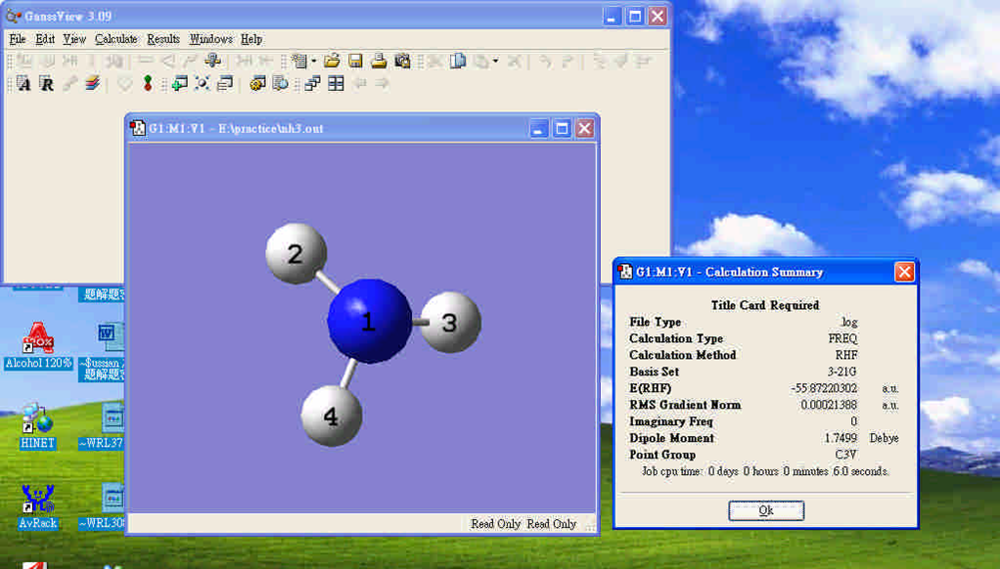
Example 8 - Transition State
Predict the structure of the transition state for the following reaction:
SiH4 → SiH2 + H2
Learning target: Scan, TS, QST2, QST3
Method 1 - Scan
(1) 先計算 opt 及 freq 之 SiH4結構，作為 scan 的初始結構。
(2) 因為要進行脫附反應，所以將兩個 H 原子 scan 至 H2 鍵結的距離，使之自動脫附，需在 input 檔 (.gjf) 中輸入 scan 的指令及參數，完整 gjf 檔如下所示：
%chk=SiH4-s.chk
%mem=6MW
%nproc=1
# hf/3-21g opt=(modred,maxcyc=20) scfcyc=1000 nosymm
Title Card Required
0 1
Si 0.00000000 0.00000000 0.00000000
H 0.85832600 0.85832600 0.85832600
H -0.85832600 -0.85832600 0.85832600
H -0.85832600 0.85832600 -0.85832600
H 0.85832600 -0.85832600 -0.85832600
2 3 s 17 -0.1
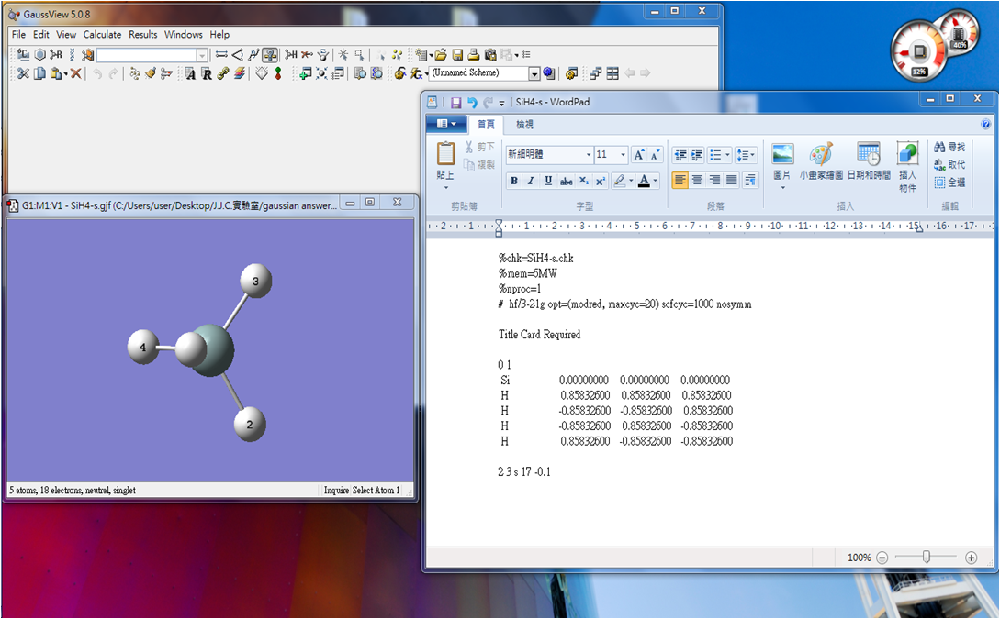
scan commands
opt=(modred,maxcyc=20)
modred:
maxcycle:
scan parameters
2 3 s 17 -0.1
以此題為例，要使兩個氫原子 scan 至氫分子鍵結，由於 SiH4 中 2 與 3 號兩個氫的距離為 2.42Å 和氫分子的鍵長 0.74Å 相差約 1.7Å ，故選擇 2 與 3 號為要 scan 的原子，後面加 s 為做 scan 的指令，17 為 scan 的步數，-0.1 則為每次 scan -0.1Å (因距離要越靠越近所以為負值)，其必為實數。
註：需在 GaussView 中開啟 label 才可在原子上看到對應的標號。
scan 參數設定如下所示：
scan distance:
scan angle:
scan dihedral angle:
symmetry
nosymm
跑 scan 時，會打破結構對稱性，由於系統本身為對稱性結構，所以 scan 到某點時，job 會因須打破對稱性而無法完成 scan，因此需使用 nosymm (nosymmetry)。
(3) 打開 output 檔，選擇 Results 中的 Scan，下圖為 SiH4 → SiH2 + H2 脫附反應的 potential surface。
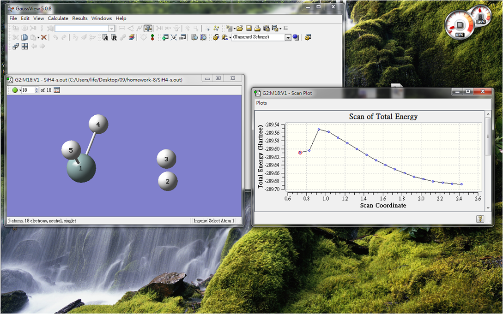
(4) 由上圖中的 Scan of Total Energy，取最末點 (最右邊) 進行結構最佳化計算，就可得到產物的結構。
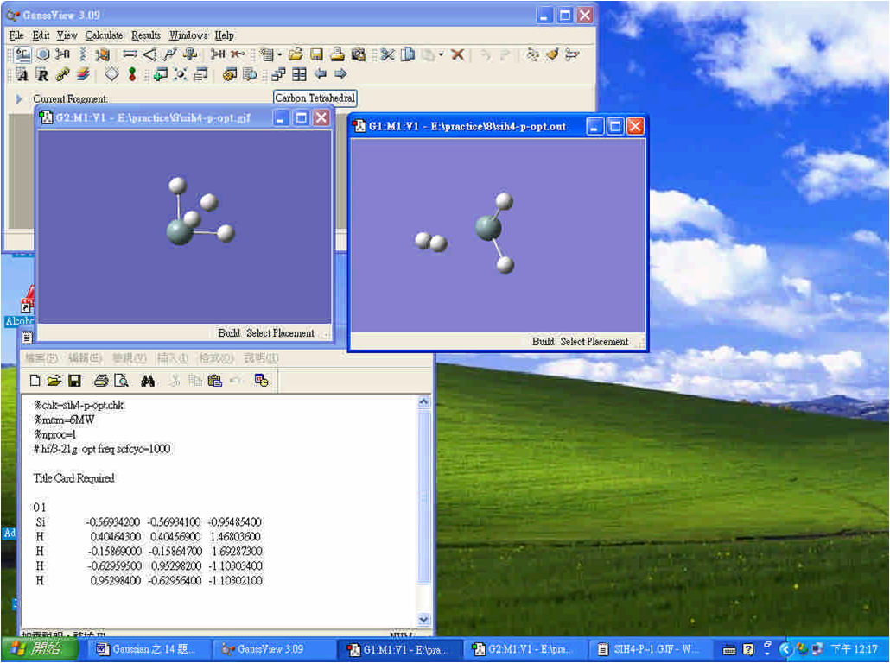
(5) 取其能量最高點進行 TS 的計算，可得到過渡態的結構；然後選擇 Result / Vibration，觀察其負頻的振動方向，來判斷此負頻為正確的過渡態結構。
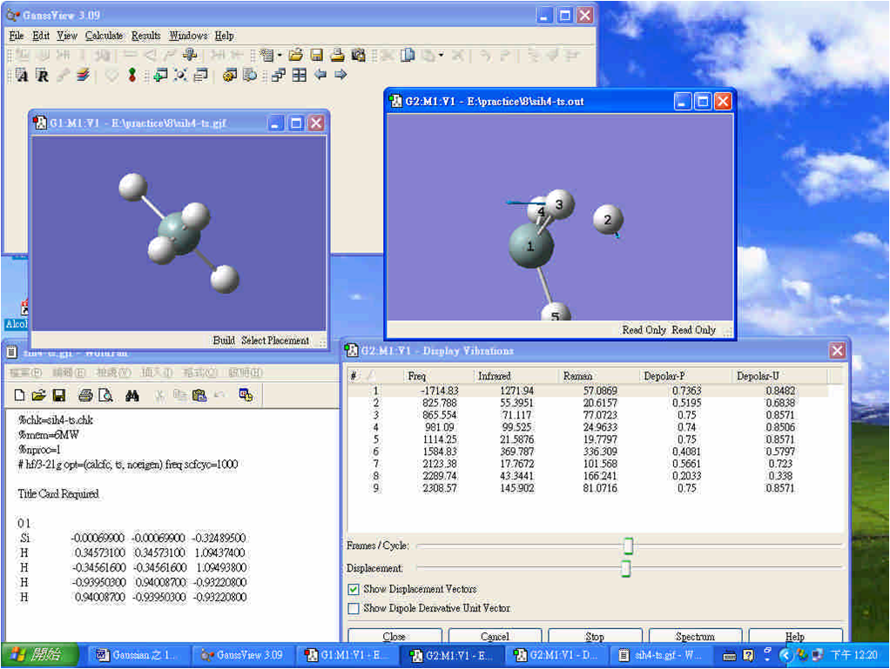
另外，也可利用 qst2 與 qst3 的方法求得過渡態結構，其做法先要有反應物、產物和過渡態之最佳化結構。
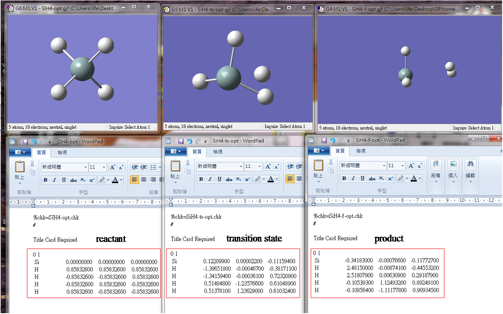
Method 2 - QST2
先介紹 qst2 方法，輸入 opt = qst2 的指令，並依序置入反應物及產物之最佳化結構，gjf檔如下，進行計算後即可得到下圖的結果。
註：方法 qst2 中 2 意旨反應物及產物的兩個結構。
%chk=SiH4-qst2.chk
%mem=6MW
%nproc=1
# hf/3-21g opt=qst2 freq scfcyc=1000
reactant
0 1
Si 0.000000 0.000000 0.000000
H 0.848705 0.848705 0.848705
H -0.848705 0.848705 -0.848705
H 0.848705 -0.848705 -0.848705
H -0.848705 -0.848705 0.848705
product
0 1
Si -0.326295 -0.000010 -0.117923
H 2.423722 0.000069 0.334794
H 2.358674 -0.000101 -0.490358
H -0.107155 -1.118954 0.903350
H -0.107117 1.119128 0.903130
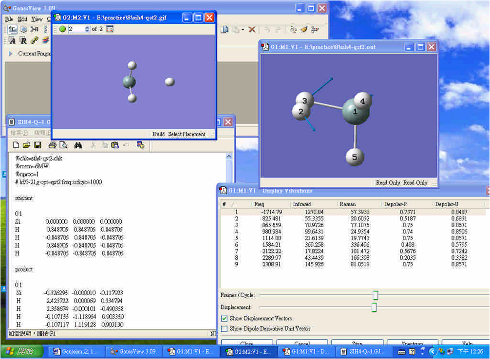
Method 3 - QST3
而 qst3 則輸入 opt=qst3 的指令，並依序置入反應物、產物和過渡態之最佳化結構，計算結果如下圖； qst3 方法為當前兩個方法無法實行，或是想要更精準的過渡態結構時，可使用之。
註：方法 qst3 中 3 意旨反應物、產物及過渡態三個結構。
%chk=SiH4-qst3.chk
%mem=6MW
%nproc=1
# hf/3-21g opt=qst3 freq scfcyc=1000
reactant
0 1
Si 0.000000 0.000000 0.000000
H 0.848705 0.848705 0.848705
H -0.848705 0.848705 -0.848705
H 0.848705 -0.848705 -0.848705
H -0.848705 -0.848705 0.848705
product
0 1
Si -0.326295 -0.000010 -0.117923
H 2.423722 0.000069 0.334794
H 2.358674 -0.000101 -0.490358
H -0.107155 -1.118954 0.903350
H -0.107117 1.119128 0.903130
ts
0 1
Si -0.183989 -0.000012 -0.121730
H 1.659511 0.000118 0.941022
H 1.833888 -0.000101 -0.665189
H -0.458789 -1.215150 0.714323
H -0.458765 1.215307 0.714066
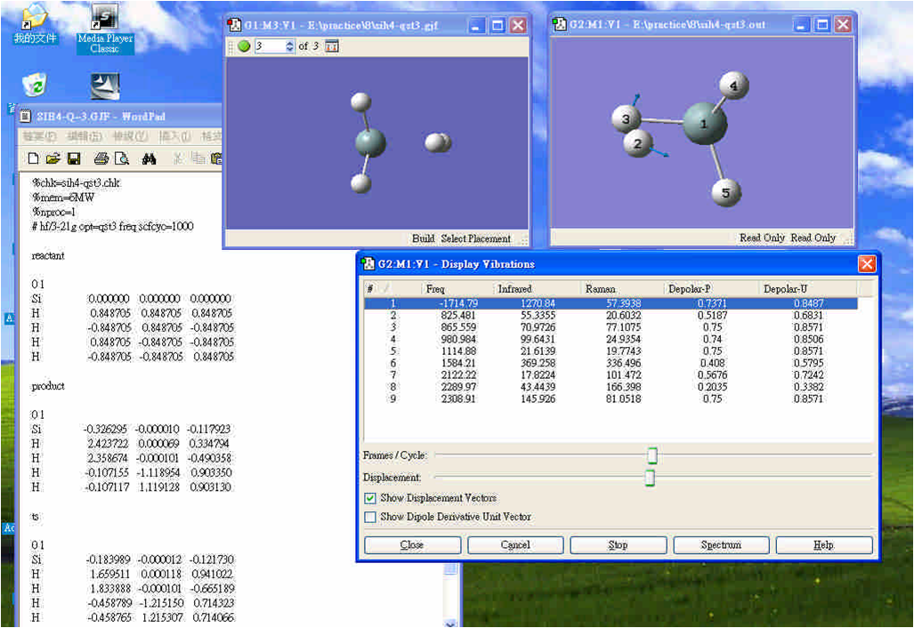